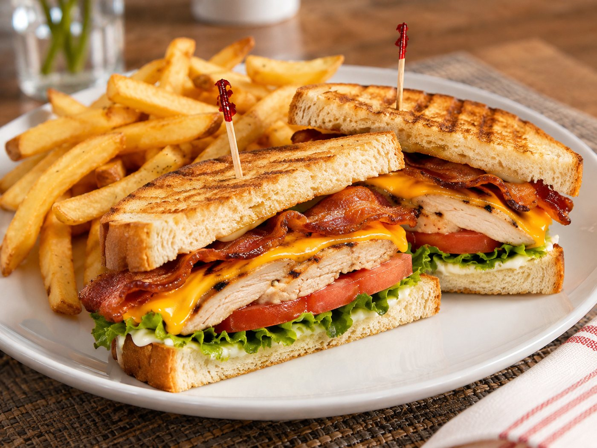

Ka timid jikadayada
Waxaan nahay makhaayadda xaafaddaada ee quraacda iyo qadada ee Central Avenue. U imow qaxwo degdeg ah, subax deggan ama miis qoyska oo dhan ah. Qof walba wax baa u yaal.
Cajiin guriga lagu sameeyey
Pancake laga sameeyey habka dhaqameed ee cunto-kariyaha.
Hilib burger oo cusub
Hilibka burger-kayaga maalin kasta ayaa cusub loo diyaariyaa.
Bilow ilaa dhammaad annagaa samaynna
Kareem la garaacay, suugo caramel ah iyo waxyaabo kale oo jikadayada lagu sameeyo.
Hadda la miiray
Casiir liin macaan oo subaxdaada iftiimiya.